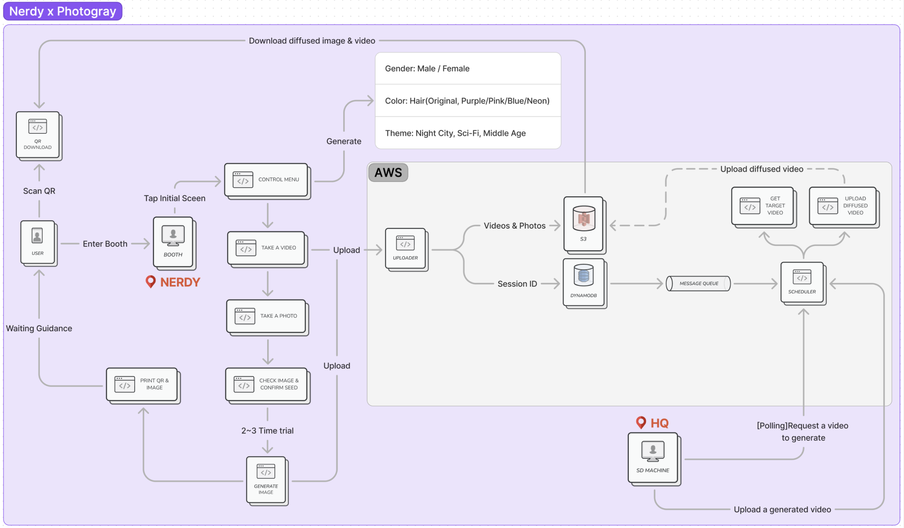
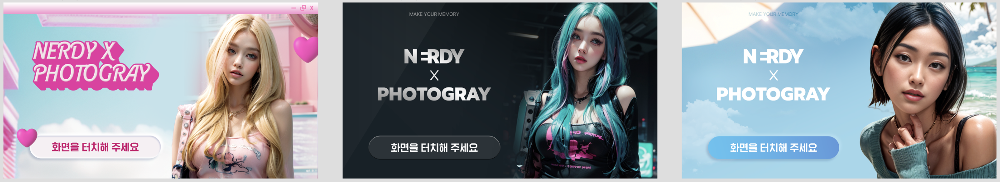
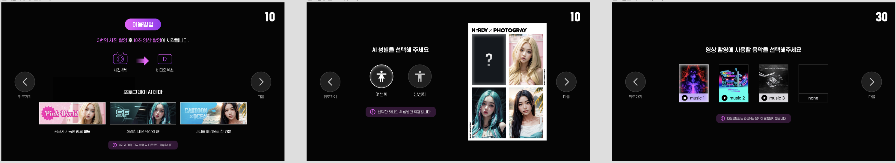
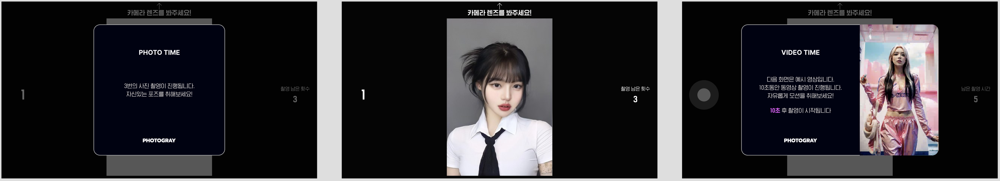
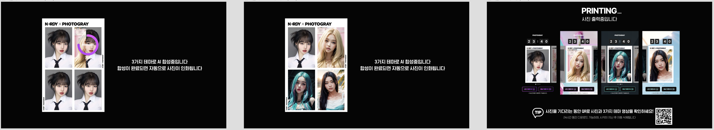
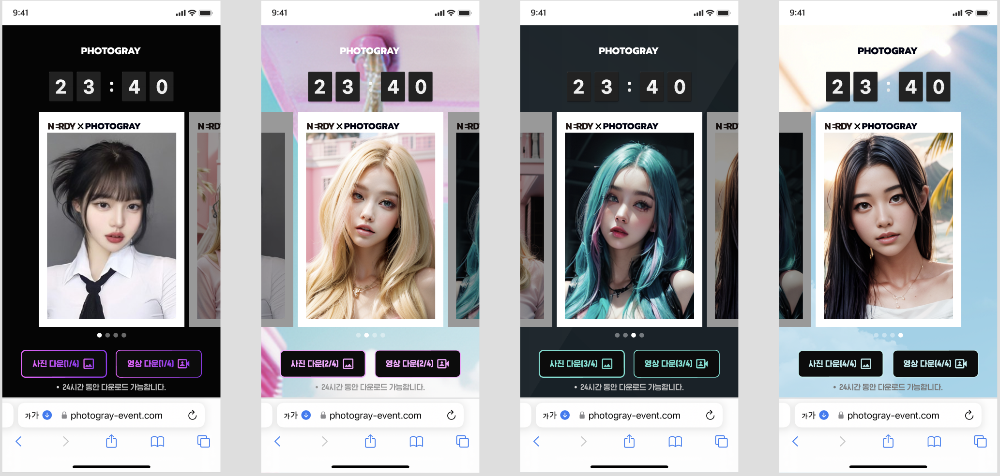
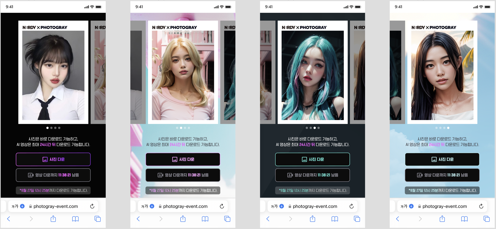
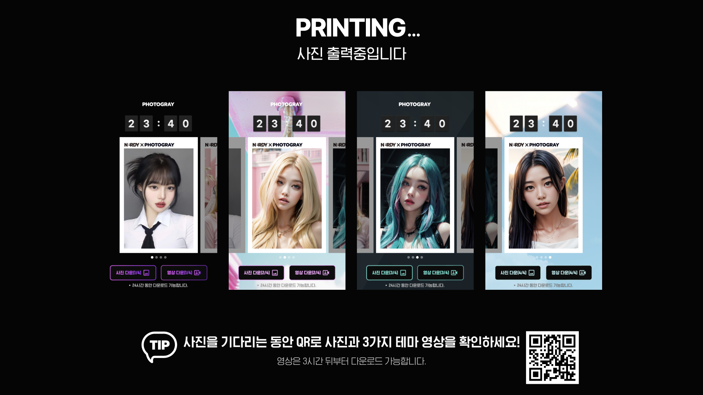
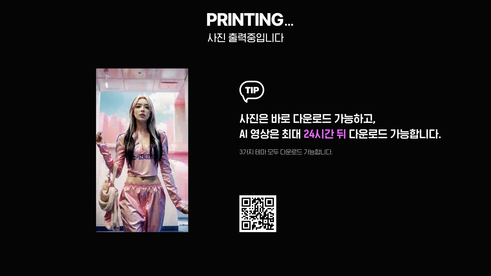
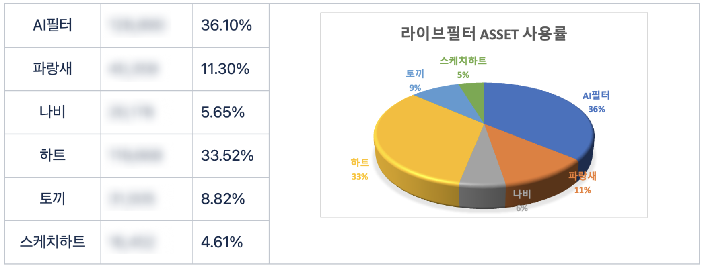

자사 의류 브랜드 'Nerdy'와의 콜라보를 위해 AI 필터가 새롭게 추가되면서, 기존 포토부스 플로우가 아닌 신규 이벤트성 화면의 기획과 디자인이 필요했습니다. PHOTOGRAY 개발팀과 논의해 빠르게 출시할 수 있도록 구조를 최대한 간단하게 설계했습니다.
자사 의류 브랜드인 'Nerdy'와 콜라보를 진행하기 위해 AI 필터가 새롭게 추가되었습니다. 기존 포토부스 플로우를 그대로 쓸 수 없어 신규 이벤트성 화면의 기획과 디자인이 필요했고, PHOTOGRAY 개발팀과 논의하여 빠른 시간 내 출시할 수 있도록 서버 구조부터 최대한 간단하게 구축했습니다.

포토그레이 개발팀과 논의하여, 빠른 시간 내 출시할 수 있도록 최대한 구조를 간단하게 구축했습니다.
3가지 테마별 이미지가 3초 단위로 로테이션되는 형태로 구현했습니다. 이용방법 안내 숙지 후 성별, 음원까지 고르고 나면 사진과 영상을 찍을 수 있는 프로세스로 구성했습니다.





각 테마별 이미지와 영상을 제한 시간 내 받아볼 수 있는 페이지입니다.



짧은 기간 진행된 일시적인 이벤트였지만, 인기 라이브 ASSET이었던 '하트'를 제치고 1위로 올라설 만큼 인기 있었던 기능이었습니다.
